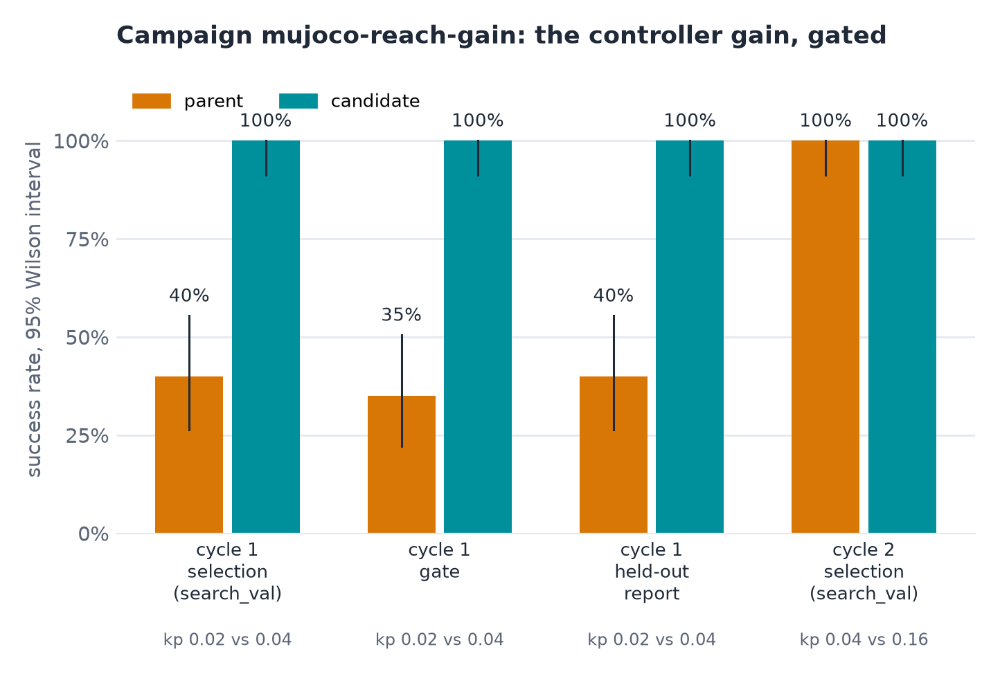
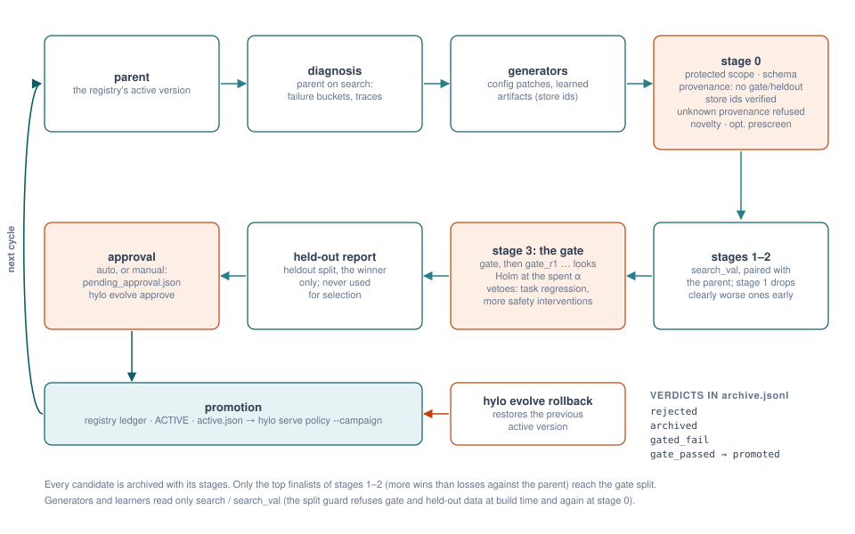

A rule generator raised a weak controller gain; the candidate passed the sequential gate and was promoted. On held-out episodes it won 24 pairs and lost none (p = 6e-8): success went from 0.40 to 1.00.

Physical AI, measured
Hylo evaluates robot policies, learns from what they did, and promotes a change only when a paired statistical test on episodes it never trained on says it is better. The approved version then runs on the robot, through the same episode loop it was measured with.


put both the alphabet soup and the tomato sauce in the basket
Platform
Environments, policies, learners and gates are plugins behind versioned contracts. What an experiment measures is separate from where it runs, so a result means the same thing on a workstation, a GPU box and the robot computer.
hylo runEvery episode is traced step by step. A digest identifies the experiment on any machine; where components run never changes it.
hylo benchProtocols fix episodes, seeds and timing. Scorecards carry Wilson intervals; pairs of policies are compared with McNemar's test.
ChunkPolicyOne contract covers retrieval, behaviour cloning, flow matching, tokenized actions and model-based planning, plus SmolVLA and pi0 through LeRobot and openpi.
hylo learnLearners turn development runs into sealed, digest-pinned artifacts: critics, memories, world models, success judges. Gate and held-out data are never read.
hylo evolveCampaigns propose config patches and learned artifacts, screen them, and promote one only after a sequential paired test and a person's approval.
hylo serveA workcell runs the same episode loop in real time, behind a safety shield and an operator channel with stop, e-stop and verdicts.
How it works
Every candidate change goes through the same cascade on disjoint sets of initial states, so the episodes that decide a promotion were never used to find it.

Results
Small studies so far, each recorded with its configuration, versions and per-episode outcomes.
A rule generator raised a weak controller gain; the candidate passed the sequential gate and was promoted. On held-out episodes it won 24 pairs and lost none (p = 6e-8): success went from 0.40 to 1.00.

Model-based planning, flow matching with steering and ACT-style temporal ensembling lead plain behaviour cloning (71%) on the same protocol; the IK expert reaches 100%.

The same policy scored with the world waiting for each call, then in real time with 0.5 s per chunk and the arm still moving: 19 hold steps per episode. Too few episodes for a conclusion, enough to show the gap is measurable.
Calibrated against simulator outcomes on 600 LIBERO-10 episodes before it may label any data; instruments are trusted only after calibration.
Open source
The harness is the only base. Every other repository builds on it alone and cooperates with the rest through formats defined in hylo-core. Apache-2.0.
Clone the harness, let it fetch the other repositories into one workspace, and run a MuJoCo experiment. Everything runs on CPU.
# Python 3.10+ and uv
git clone https://github.com/HyloAI/hylo-harness.git harness
HYLO_GIT_BASE=https://github.com/HyloAI harness/dev/bootstrap.sh
uv run hylo run bench/examples/configs/mujoco_reach.yaml